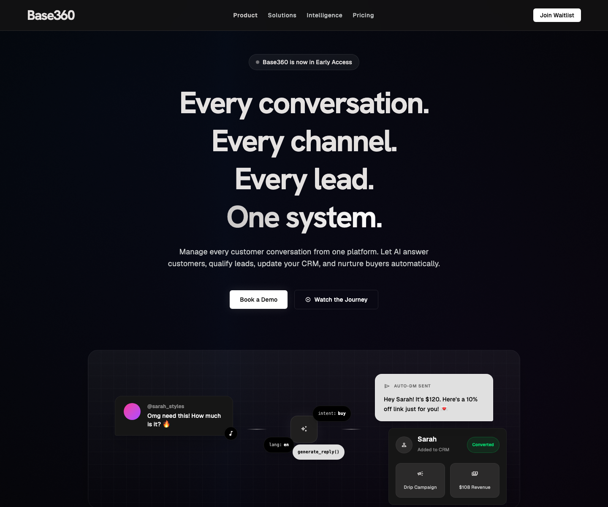

Base360
An early-access AI platform for managing conversations across channels, qualifying leads, updating CRM data, and nurturing buyers automatically.

Explain a broad AI workflow in one focused story
Base360 touches multiple workflows: customer conversations, lead qualification, CRM updates, and follow-up automation. The challenge was to make the promise easy to understand without turning the landing page into a feature list.
A cinematic SaaS page built around one system
I framed the product around a memorable sequence: every conversation, every channel, every lead, one system. The UI direction uses a dark, focused stage to make the product simulation, demo CTA, and waitlist action feel high-intent.
Clear Product Positioning
The headline turns a complex platform into a simple promise that sales, support, and growth teams can understand quickly.
Workflow Visualization
The hero scene shows a lead moving from conversation to AI response to CRM conversion, making the automation feel tangible.
Early-Access Conversion
The page gives visitors two clear actions: book a demo for high intent or join the waitlist for lower-friction demand capture.
Key takeaways
One sentence for a multi-workflow product
The concept became easier to communicate because the page centers all functionality around one AI system.
Strong first-viewport signal
The first screen immediately communicates the product category, stage, primary action, and core automation loop.
Designed for demo demand
The hierarchy keeps attention on booking a demo while preserving a secondary waitlist path for future launch momentum.